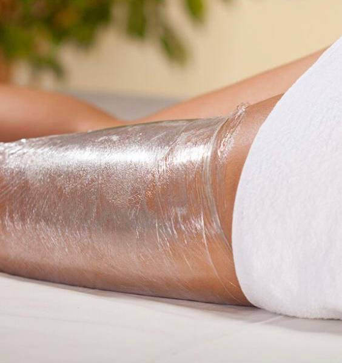
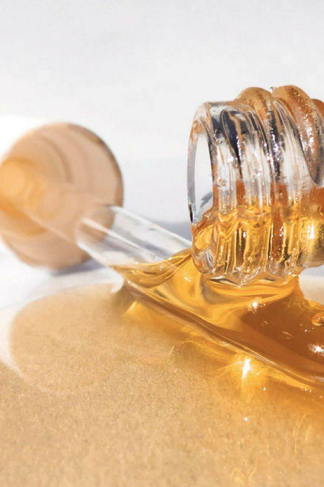
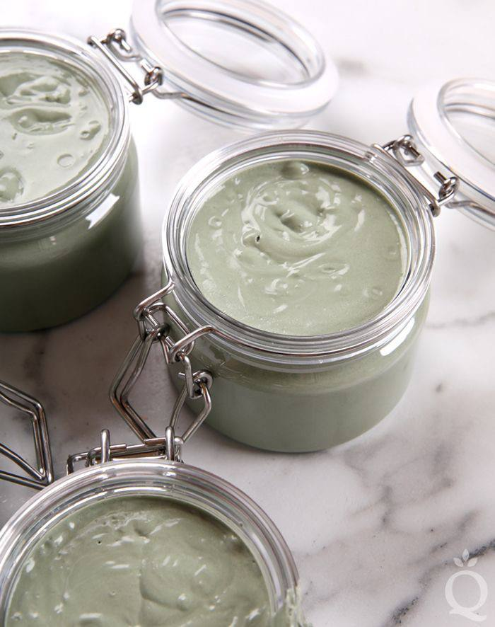
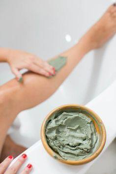
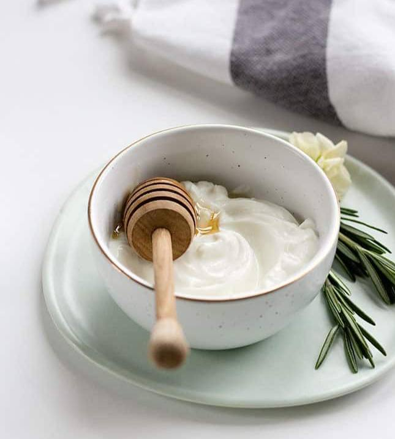
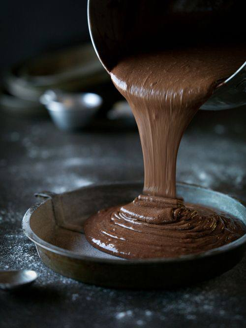
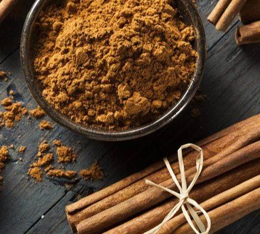

Beauty advice
уход за кожей и волосами в домашних условиях
⇐ на главную
Wrapping
❤ Обёртывание — популярная и эффективная процедура. Суть в том, что все тело или отдельные его участки покрываются специальной маской, а после аккуратно оборачиваются плёнкой. Благодаря тому, что плёнка создаёт "парниковый эффект", происходит усиленное воздействие активных компонентов маски на кожу.
Выводится лишняя вода, расширяются поры и улучшается кровообращение.
❤ Обёртывания хорошо помогают в процессе похудения: после процедуры кожа заметно разглаживается и со временем уходят объёмы.
Также обёртывания хорошо борются с проблемой отёчности тела.
❤ Перед процедурой обязательно нужно проверить состав на коже, дабы избежать появления аллергической реакции.
Также для обёртываний есть ряд противопоказаний:
› гинекологические заболевания
› сердечно - сосудистые заболевания
› варикоз
› цистит
› беременность и период кормления грудью
› поврежденная и раздраженная кожа.
❤ Как подготовить кожу к процедуре?
› последний прием пищи должен быть за 2-3 часа до процедуры.
› нужно принять тёплый душ, чтоб разогреть кожу, а также рекомендуем использовать скраб.
❤ После нанести готовый состав на кожу и обернуть плёнкой. Для усиления эффекта можно укрыться одеялом и выдержать маску от 40 до 90 минут.
❤ По истечению времени аккуратно снять плёнку и смыть состав тёплой водой, а после нанести увлажняющий крем.
Ингредиенты:
❤ оливковое или миндальное масло - 50 мл.
❤ цитрусовое эфирное масло - 4-5 капли
Для приготовления маски для обёртывания нужно всего лишь смешать все ингредиенты вместе и после нанести на кожу.
Ингредиенты:
❤ cухие листья ламинарии - пару листов
❤ яблочный уксус - 20 мл.
В первую очередь нужно замочить сухие листья ламинарии в прохладной воде на 30 минут. Когда листья размякнут - измельчить их блендером и добавить яблочный уксус.
Ингредиенты:
❤ зелёная глина - 90 гр.
❤ масло перечной мяты - 2-5 капель.
Необходимо смешать компоненты вместе и нанести готовую маску на кожу.
P.S. Для чувствительных участков кожи не рекомендуется использовать такое обёртывание, поскольку мята имеет охлаждающий эффект.
Ингредиенты:
❤ cухое молоко - 75 гр.
❤ жидкий мёд - 30-45 гр.
Для получения состава нужно сухое молоко смешать вместе с жидким мёдом. В случае, если смесь получилась густая, можно добавить немного теплой воды, с целью получить консистенцию на подобие крема.
Ингредиенты:
❤ какао-порошок (желательно использовать натуральное какао, без добавок) - 80 гр.
Какао нужно развести с теплой водой для получения кремообразной консистенции - маска для обёртывания готова!
Ингредиенты:
❤ зеленый чай - 75 гр.
❤ жидкий мёд - 45 гр.
❤ корица - 5 гр.
Какао нужно развести с теплой водой для получения кремообразной консистенции - маска для обёртывания готова!
Про обёртывания
Обёртывание с маслом
Обёртывание с водорослями
Мятное обёртывание
Медово-молочное обёртывание
Шоколадное обёртывание
Обёртывание с чаем и корицей
With love to you...